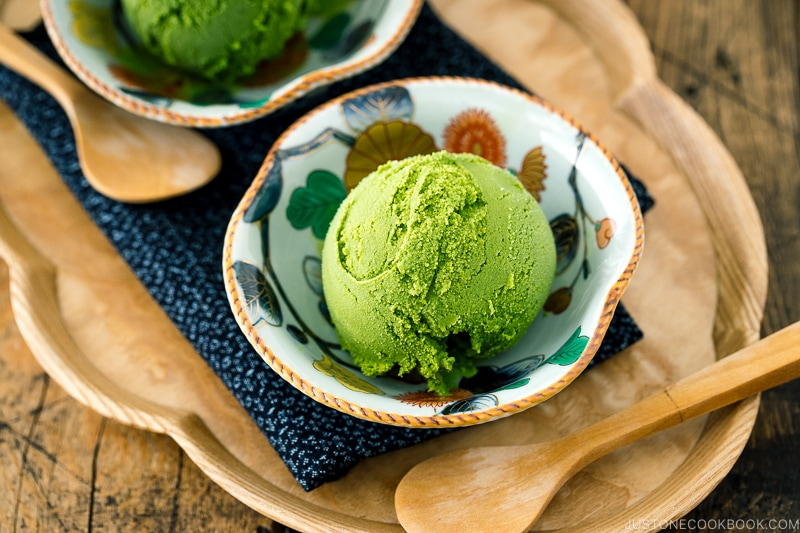

Simple, but flavorful matcha ice cream!

This recipe only has 4 ingredients!
Earthy, sweet Matcha Green Tea Ice Cream is the perfect treat on a hot day.
Ingredients
- Matcha
- Half & Half or Milk & Cream
- Sugar
- Salt
Steps
- In a medium saucepan, combine milk and heavy cream (or just Half and Half) and turn the heat to medium-low.
- Add sugar and salt and whisk together. We heat the milk mixture until sugar is dissolved, then turn off the heat. Remove the pot from the heat if you see small bubbles around the edges of the pot and NEVER let it boil.
- Add the milk mixture to the bowl of matcha and mix with a silicone spatula until the liquid absorbs the matcha.
- Press and strain the matcha left in the fine-mesh sieve. Let the matcha mixture cool on the countertop. When the mixture is cool, cover with plastic wrap and chill in the refrigerator for at least 4 hours. IMPORTANT: If you don't chill enough, the ice cream machine will not be able to create the mixture into the ice cream consistency.
- Transfer the mixture to the bowl and churn according to the manufacture's instructions.